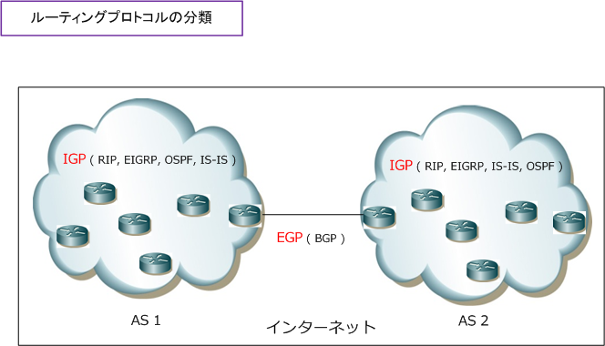
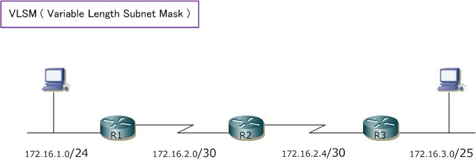
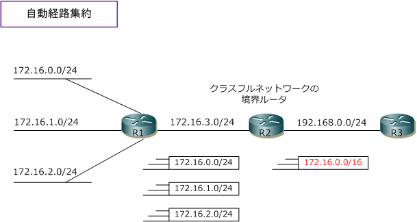
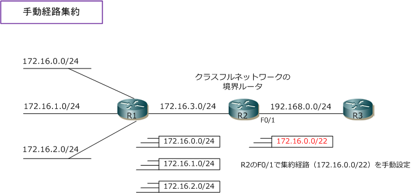
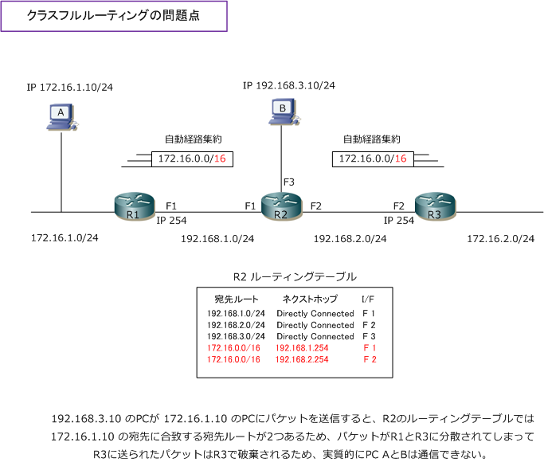

Dynamic Routing - Part 2
ルーティングプロトコルの分類
ルーティングプロトコルには、RIP、EIGRP、OSPF、IS-IS、BGPなど多くの種類があります。これらは 内部ゲートウェイプロトコルのIGP（ Interior Gateway Protocol ）と、外部ゲートウェイプロトコルの EGP(Exterior Gateway Protocol) の大きく2種類に分類されます。下図のAS (Autonomous System) は 1つのISP、企業、研究機関など共通ポリシーにより運用されるネットワークの集合体のことを意味します。
| 内部 or 外部 | 説明 | ルーティングプロトコルの例 |
|---|---|---|
| IGP | AS内で使用されるルーティングプロトコル | RIP、EIGRP、OSPF、IS-IS |
| EGP | AS間で使用されるルーティングプロトコル | BGP |

この自律システムには一意の識別番号が割り当てられており、それをIANAが管理し、日本ではJPNICが割り 当てを行っています。具体例としてNTT東日本のAS番号は"17933"、早稲田大学は"7956"となっています。 上図でも分かる通りインターネットとはASの集合体とも言えます。なおAS内でどのルーティングプロトコル （RIP or EIGRP or OSPF or IS-IS）を使用するのかはネットワーク環境や導入機器の実装などに依存します。
IGPのルーティングプロトコルの分類 ( アルゴリズムによる分類 )
ルーティングプロトコルには大きくIGPとEGPがあることが分かりました。そして、IGPにはRIP、EIGRP OSPF、IS-ISなどがあることが分かりました。さて、このIGPですが、ルーティングのアルゴリズムにより ディスタンスベクター、リンクステート、ハイブリッドの3つに分類できます。それぞれの特性は以下です。
| 比較項目 | ディスタンスベクター | リンクステート | ハイブリッド |
|---|---|---|---|
| 最適ルートの決め方 | 距離と方向（ホップ数） | リンクの状態（コスト値） | 距離と方向（複合値） |
| 使用するアルゴリズム | ベルマンフォード | SPF | DUAL |
| コンバージェンス | 遅い | 速い | 速い |
| ルータの負荷 | 小さい | 大きい | 小さい |
| ルーティングプロトコル | RIPv1、RIPv2 | OSPF、IS-IS | EIGRP |
コンバージェンス（収束）とはネットワークの安定した状態のこと。具体的にはネットワーク上の全ての ルータがルーティングテーブル上に本来あるべき必要な宛先ルートを安定して保持している状態のことです。
ディスタンスベクターはディスタンス（距離）とベクター（方向）で最適なルートを決定するアルゴリズム。 簡単にいえば、ホップ数により最適なルートを決定します。ルータ間では定期的にルーティングテーブル全体 を交換し合うことでリモートネットワークの宛先ルートを受信します。単純な動作で収束が遅いのが特徴です。
リンクステートは、ルーティングプロトコルがネットワーク全体のトポロジーを把握した上で宛先への最適 ルートを決定するアルゴリズム。最適ルートの計算にSPF (Shortest Path First) を使用します。ルータ間で ルーティングテーブル全体を交換するのではなくて、LSA (Link State Advertisement) と呼ばれるリンク、 つまり、I/Fに関連する状態を交換して、ネットワーク変化時に必要な情報だけをルータ間でやりとりします。
ハイブリッドは、ディスタンスベクターとリンクステートの両方の機能を組み合わせたアルゴリズム。これは Cisco Systems独自のアルゴリズムであるDUALを使用し、宛先への最適ルートの計算を行っています。この DUALでは最適ルートの決定と同時にバックアップルートを決定するため、収束が高速なのが特徴となります。
IGPのルーティングプロトコルの分類（クラスフル/クラスレスによる分類）
先ほどはIGPのルーティングプロトコルを「ルーティングアルゴリズム」の点から分類してみました。今回は IGPのルーティングプロトコルを通知するルート情報にサブネットマスクを含めるかどうかの点で分類します。 通知するルート情報にサブネットマスクを含めないのがクラスフルルーティングプロトコルです。それに対し 通知するルート情報にサブネットマスクを含めるのがクラスレスルーティングプロトコルです。一般的に使用。
| クラスフル / クラスレス | 説明 | ルーティングプロトコルの例 |
|---|---|---|
| クラスフルルーティングプロトコル | 通知するルート情報にサブネットマスクを含めない | RIPv1 |
| クラスレスルーティングプロトコル | 通知するルート情報にサブネットマスクを含める | RIPv2、EIGRP、OSPF、IS-IS |
クラスフルルーティングプロトコルは通知するルート情報にサブネットマスクを含まないため、同じクラスフル ネットワークにおいては同じサブネットマスクを使用する必要があります。例えば、以下のネットワーク体系と なります。ネットワーク上の機器台数に関係なく全てのネットワークで同じサブネットマスクにする必要がある ため効率的なアドレッシングができません。このアドレッシングが、FLSM（ 固定長サブネットマスク ）です。
クラスレスルーティングプロトコルは、通知するルート情報のサブネットマスクを含むので、同じクラスフル ネットワークにおいて異なるサブネットマスクを使用することができます。例えば、以下のネットワーク体系 となります。ネットワーク上の機器台数に応じて、異なるサブネットマスクを使用することができることから 効率的なIPアドレッシングが可能です。このアドレッシングが、VLSM（ 可変長サブネットマスク ）です。

経路集約
ルーティングテーブル上の複数のルートを1つのルートにまとめることを経路集約と言います。経路集約には 自動経路集約と手動経路集約の2つがあり。自動経路集約はクラスフルネットワーク（クラスA or B or C）の 境界で自動的に行われる経路集約です。手動経路集約は、管理者で手動で設定可能な経路集約です。
自動経路集約では、集約される経路はクラスA ( /8 )、クラスB ( /16 )、クラスC ( /24 ) の3通りとなります。 下図においてR2はクラスフルネットワークの境界ルータとなります。R1からR2に対しては「172.16.0.0/24」 「172.16.1.0/24」「172.16.2.0/24」のネットワークは「/24」として通知されますがクラス境界ルータの R2からR3にルート情報を通知する場合には、自動的に経路集約されて「172.16.0.0/16」として通知されます。

手動経路集約では、集約経路は管理者がルート情報の内容に応じて自由に定義することができます。上図R2が クラスフルネットワークの境界ルータです。R2に「172.16.0.0/24」「172.16.1.0/24」「172.16.2.0/24」 のネットワークは「/24」として通知されます。境界ルータにおいて「172.16.0.0/24 ～ 172.16.3.0/24」の 4つのルートを持っている場合、これら4つのルートを含めることができる「172.16.0.0/22」というルートを 手動で定義することで、無駄なく適正に隣接ルータにルート情報を通知できます。手動で経路集約を行う場合 その集約経路に含めたいルートが含まれているかどうかを「サブネットマスクの計算ツール」でご確認下さい。

クラスフルルーティングプロトコルであるRIPv1では、自動経路集約が自動的に実行されます。さらに 自動経路集約は強制で、無効化することができません。一方で、クラスレスルーティングプロトコルでは RIPv2とEIGRPでは自動経路集約と手動経路集約のどちらでも実行可能で自動経路集約も無効化できます。 OSPFとIS-ISでは、手動経路集約のみ実行可能です。ややこしいので、これらの内容を下表にまとめます。
| ルーティングプロトコル | 自動経路集約 | 手動経路集約 | |
|---|---|---|---|
| クラスフルルーティングプロトコル | RIPv1 | ○ （ 無効化は不可 ) | × |
| クラスレスルーティングプロトコル | RIPv2、EIGRP | ○ （ 無効化は可能 ） | ○ |
| クラスレスルーティングプロトコル | OSPF、IS-IS | × | ○ |
クラスレスルーティングプロトコルで手動経路集約を行わない場合、上図では「172.16.0.0/24～3.0/24」の 経路が「/24」としてそのままR3に通知されることになります。従って、R2で手動経路集約が行われない場合 R3のルーティングテーブルでは「172.16.0.0/24」「172.16.1.0/24」「172.16.2.0/24」「172.16.3.0/24」 の状態で存在します。クラスレスルーティングプロトコルではサブネットマスクの情報が通知されるからです。
クラスフルルーティングの問題点（ 不連続サブネットの問題点 ）
クラスフルルーティングでは不連続サブネットをサポートできません。不連続サブネットとは異なるクラスフル ネットワークにより分断されているサブネットのことです。例えば下図の「172.16.1.0/24 と 172.16.2.0/24」 のネットワークは、「192.168.1.0/24」や「192.168.2.0/24」の異なるクラスフルネットワークによって分断 されていて、クラスフルルーティングプロトコルのRIPv1を使用した場合には、通信上に不具合が発生します。

R1がR2に「172.16.1.0/24」ネットワークを通知する時は、自動経路集約が実行される結果「172.16.0.0/16」 として通知されるので、R2のルーティングテーブルでは「172.16.0.0/16」のネクストホップは192.168.1.254 として登録されます。また、R3がR2に「172.16.2.0/24」のネットワークを通知する時には自動経路集約が実行 される結果「172.16.0.0/16」として通知されることから、R2のルーティングテーブルの「172.16.0.0/16」の ネクストホップは今度は「192.168.2.254」として登録されます。
結果、R2のルーティングテーブルでは「172.16.0.0/16」という宛先ルートが2つ登録される結果となります。 このような状態では上図の説明にあるように通信できなくなります。以上のことからも、不連続サブネットが 存在するネットワークにおいては、クラスレスルーティングプロトコルをルータに実装させる必要があります。